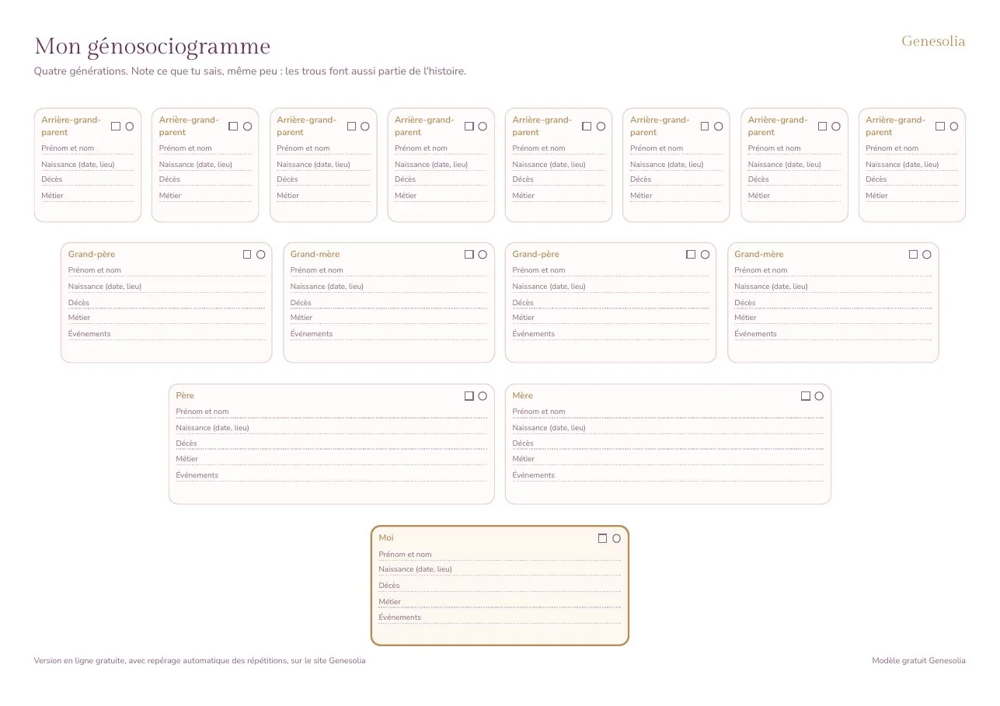

Le modèle à imprimer
- Idéal pour une première ébauche ou un repas de famille
- Quatre générations, une case par personne
- Les répétitions, c'est toi qui les repères
Un génosociogramme vierge, prêt à imprimer, pour remplir ton arbre familial à la main sur quatre générations. Gratuit, en PDF, sans inscription.

Format A4 paysage, deux pages, 65 Ko.
Le papier aide à commencer, crayon en main, en interrogeant ta famille. La version en ligne va plus loin quand l'arbre grandit.
Un génosociogramme vierge se remplit plus facilement qu'on ne le croit, à condition de procéder par étapes. Le plus important n'est pas d'avoir toutes les informations dès le départ, mais de commencer avec ce que tu sais, puis de compléter au fil des discussions et des recherches.
Imprime le modèle sur une feuille A4 en mode paysage, sans mise à l'échelle, pour que les cases restent lisibles. Prends un crayon à papier et une gomme : il est fréquent de corriger des dates en cours de route. Deux ou trois couleurs peuvent t'aider ensuite, par exemple une pour les deuils, une pour les départs et une pour les unions. Garde à portée de main le livret de famille, les faire-part, les photos annotées au dos, et tout document qui donne une date ou un lieu.
Commence par ta propre case, puis celles de tes parents, de tes grands-parents et de tes arrière-grands-parents. Note pour chacun·e l'année de naissance, l'année de décès si elle est connue, la région ou le pays d'origine et le métier. Ajoute ensuite les événements marquants avec l'âge de la personne au moment où ils se sont produits : c'est l'âge qui permet de voir les coïncidences entre générations. Pour représenter les liens et les décès, appuie-toi sur les symboles du génosociogramme, qui sont les mêmes que sur la légende du modèle.
Quand une information manque, écris un point d'interrogation plutôt que de laisser vide. Ces points d'interrogation sont précieux : ils montrent où se trouvent les silences de ta famille, et parfois ce sont eux qui en disent le plus.
La version papier se prête bien à un moment partagé : un repas, une visite chez une grand-mère, un après-midi avec un oncle qui aime raconter. Pose la feuille sur la table et laisse les gens réagir. Une case vide déclenche souvent un souvenir. Si tu ne sais pas comment amorcer la conversation, tu peux t'inspirer des questions à poser à sa famille.
Une fois la feuille bien remplie, prends un moment pour la regarder dans son ensemble. Entoure les âges qui reviennent, les mois où plusieurs événements se concentrent, les prénoms repris. Tu n'as pas besoin de tout comprendre tout de suite : ce premier repérage suffit à faire naître des questions. Quand l'arbre devient trop serré pour la feuille, tu peux le recopier en ligne et continuer avec plus de place.
Ouvre le PDF et choisis le format A4 en orientation paysage dans les options d'impression. Désactive l'ajustement automatique ou choisis une échelle à 100 % pour que les cases gardent leur taille. Si tu veux plus de place pour écrire, tu peux aussi l'imprimer en A3 chez un imprimeur ou dans une papeterie.
Remplis ce que tu sais et mets un point d'interrogation dans les cases inconnues. Interroge ensuite les proches qui peuvent savoir, consulte les archives départementales ou l'état civil pour retrouver des dates. Un manque d'information n'empêche pas de commencer : il montre souvent où se trouvent les silences ou les ruptures dans l'histoire familiale.
Les conventions les plus courantes sont un carré pour un homme, un rond pour une femme, et une croix ou un symbole barré pour une personne décédée. Un trait horizontal relie un couple, un trait barré indique une séparation, et des traits verticaux mènent aux enfants. Le modèle vierge comprend une légende pour t'y retrouver facilement.